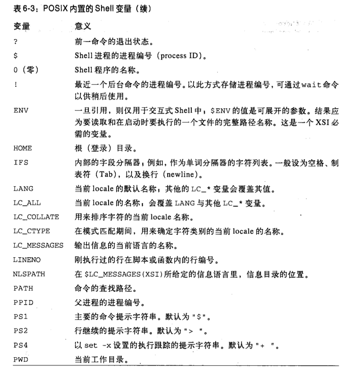

shell语法
安全
-
有一些shell攻击基于修改
IFS,因此在脚本文件前面最后有一句IFS=" "最好包括空格tab和换行
重定向
重定向到标准流要利用 & 如： echo a 1>&2
命令行参数
$1
|
第一个参数 | ||
$(10)
|
第10个参数 | ||
$#
|
参数个数 | ||
$*
|
$@
|
一次表示所有参数 | |
"$*"
|
等同于 "\(1 \)2 $3 ..."
|
||
"$@"
|
等同于 "\(1" "\)2" "$3" ...
|
注： 上述出现 \( \) 都是vimwiki转义问题，实际上都是 $
变量
常用命令
export
|
|
export -p
|
打印所有被export的变量 |
readonly
|
|
readonly -p
|
|
unset -v variable
|
默认选项-v |
unset -f function
|
|
env -i PATH=XX ls
|
先修改PATH再ls |
内置变量表
#
|
目前进程参数个数 |
@
|
传递给当前进程的命令行参数 |
*
|
当前进程的命令行参数 |
-
|
选项列表 |
?
|
前一个命令退出状态 |
$
|
PID |
0
|
shell程序的名称 |
!
|
最后一个后台命令的进程编号 |

取值方法
| ${a:-b} | 如果a存在且非null，则返回a的值，反则返回b |
| ${a:=b} | 同上，不过a同时赋值b |
| ${a:?b} |
a存在非null返回a的值~否则，输出a: b 并退出
|
| ${a:+b} | a存在非null返回b，否则返回null |
以上表达式去掉:的话各效果去掉 非null
调试
开启命令跟踪
set -x something # 执行时被输出原话 set +x
分支与循环
函数
f()
{
echo $1
echo $2
}
f "a" "b"
f a b
exec
替代原shell进程，原shell进程不再继续运行